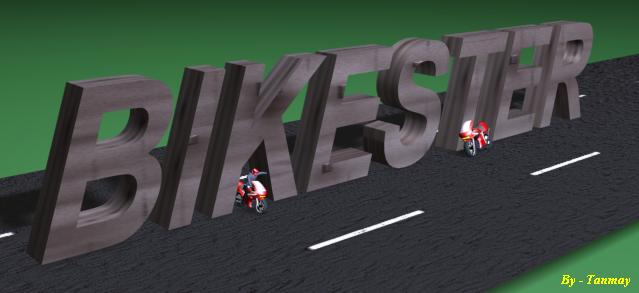
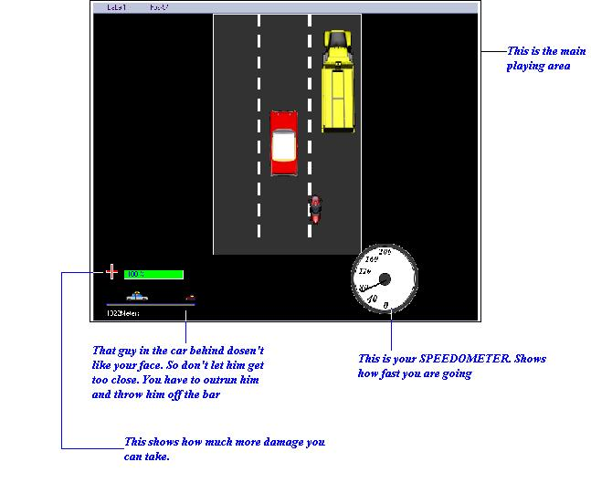

CONTENTS:-
1- Introduction
2 - Gameplay
3 - Controls
4 - Requirements
5 - About the developer
6 - Known Bugs
7 - Legal stuff
8 - Tips and Tricks
1. INTRODUCTION:-
Don't you get excited when gangsters
flee from the Police on their bikes. Well you can't do it in the real
world! No problem this game will allow you to do it.
In this game you are a gangster
and you have robbed a bank and you are fleeing with the police hot on
your tracks. This is from where the game give you the hontrol of a fast
superbike. Drive it on a one way highway, but lookout for other vehicles
because there will be many of them and they wont be going as fast as
you. So you will have to avoid them or spend an eternity in hell. The
highway you are on is a three lane highway with the middle lane the
speedway with a speedlimit of 80 Km/hr. This speed won't fit your bill
coz the patrol car behind will be racing at 100 Km/hr. So you have to
drive over 100 Km/hr to outrun him.
So what are you waiting for? Feel
the excitement. Burn rubber on road.
2. GAMEPLAY:-
Control you bike's speed and direction
and avoid colliding with other vehicles. The following picture will
explain your game play screen.

3. CONTROLS:-
Following keys will control
your bike.
Move Left
- LEFT KEY
Move Right
- RIGHT KEY
Accelerate - UP KEY
Brake
- DOWN KEY
Pause game /Menu
- ESCAPE
4. REQUIREMENTS:-
Windows
9x/Xp, > 500Mz Processor, > 128 Mb Ram , 1024 x 768
resolution. 16 Bit colours
In addition you will need the
Visual basic runtime Dll (MSVBVM60.DLL ) . You Can download this from
microsoft site
5.
ABOUT THE DEVELOPER:-
This game is developed by Tanmay
Dehury(me). I finished school this year(2005). The language used is
Visual Basic 6.0. Tools like Microsoft Paint , Photoshop are used for
Image editing. The Bike pictures are made with 3ds max 4. Bike model
downloaded from the Net(Forgot the site). You can send coments or
contact me at this email- getfun2004@yahoo.com .
6. KNOWN BUGS:-
The folloing Bugs have been found and
suggestions to rectify them are welcome
1)
Some times the game becomes too slow when the menu is drawn. I can't
Find the reason
7. LEGAL STUFF:-
I am
in no way responsible for anything that happens to you(suppose you
become a robber) or your computer(suppose the moniter explodes) after
running this program. This game is free for your use and you can use the
techniques used here in any comercial/free program. But you cannot sell
this game or ask money for it.
8. TIPS AND
TRICKS:-
Although
th game is a short of a race it does not contain much action. The
main attribute required for completing levels is patience. If you have
the urge to dash through the traffic then you will end up crashing with
a vehicle. This may sound ridiculious but you can clear most of the
levels if you drive slow(he, he). You should Drive at a speed just above
the Police.
The
damage will be less even if you collide with vehicles but if you get
squeesed between two vehicles then you are gone. So see to it.